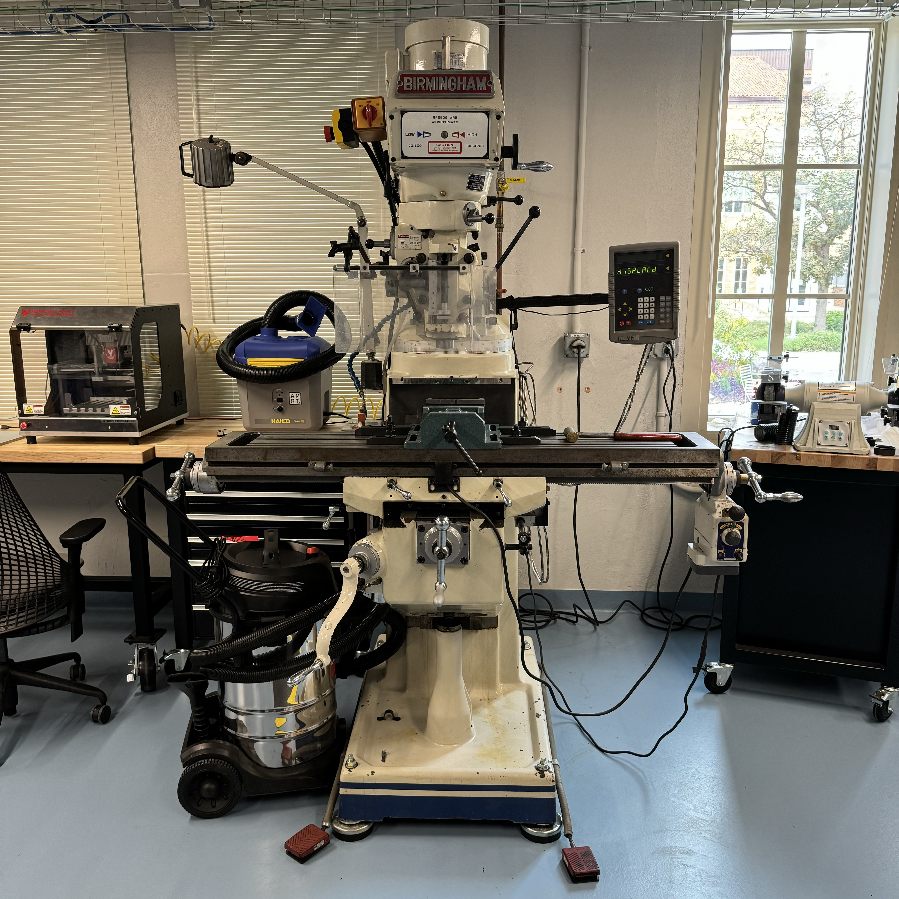
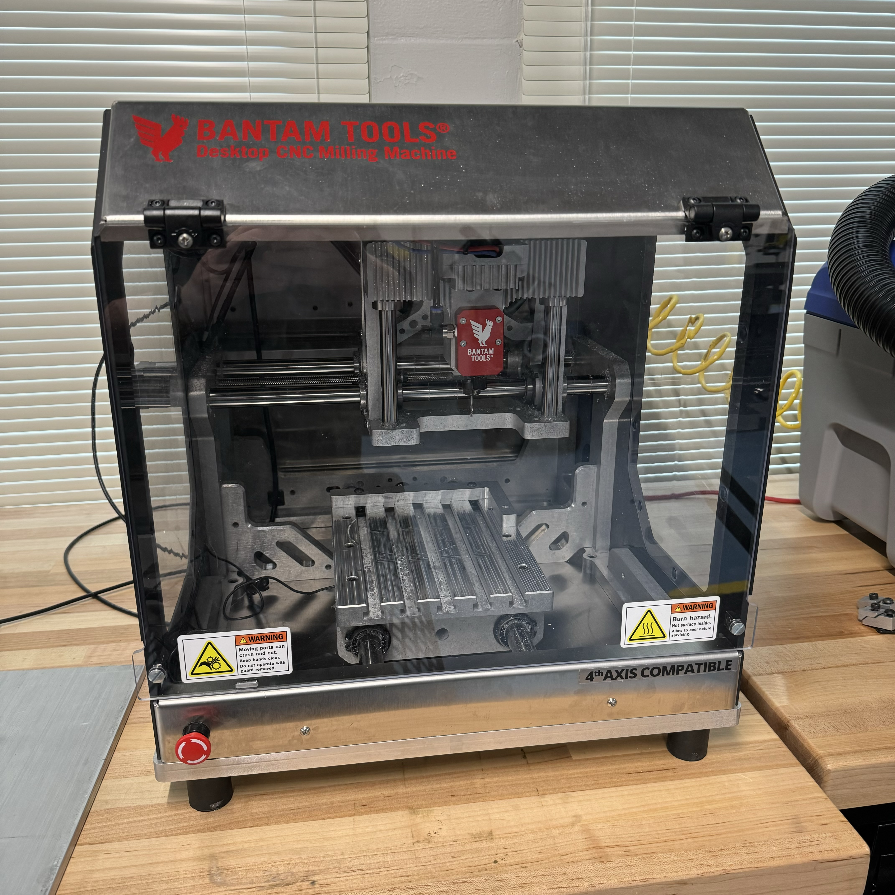
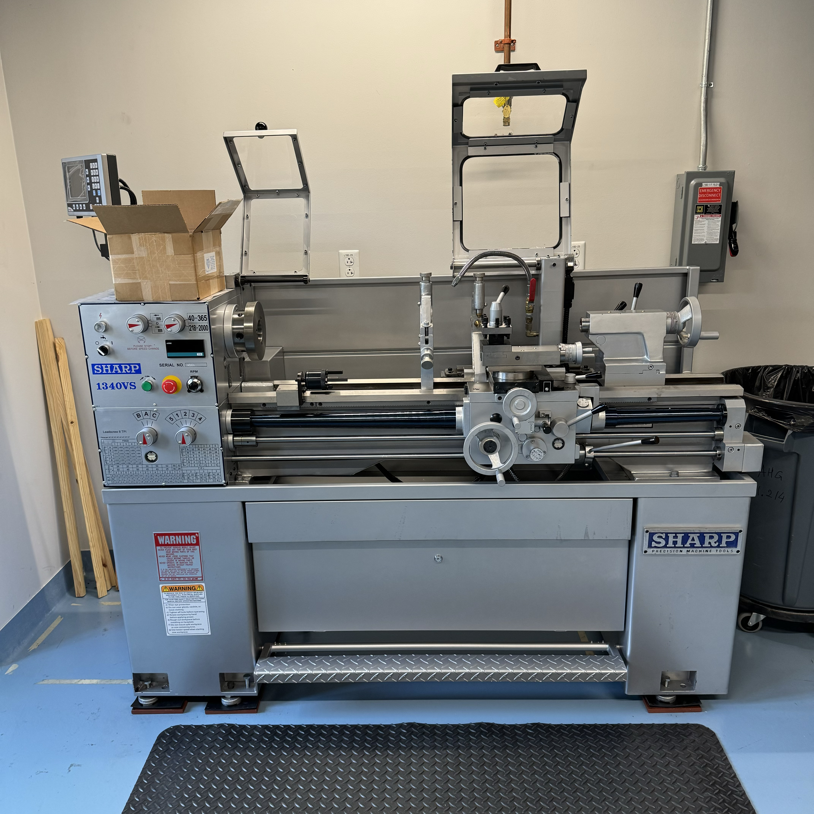
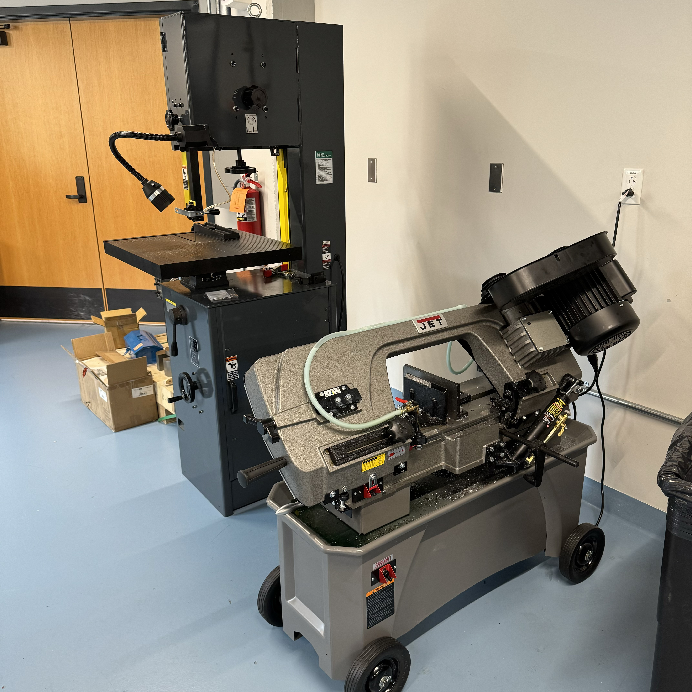

Machine Shop (AHG 1.214)

Equipment Overview
The AHG machine shop contains a variety of metalworking equipment. Below is a list of the major equipment in the Machine Shop:
- HAAS CNC MiniMill
- Birmingham Manual Mill
- Bantam Desktop CNC Mill
- Sharp Lathe
- Drill Press
- Horizontal Bandsaw
- Vertical Bandsaw
- Belt/Disc Sander
- Grinder Wheel
- Chop Saw
Additionally, the machine shop has a wide variety of handtools, fixturing equipment, and other smaller tools. If you have questions about any specific equipment, reach out to the shop manager to see if we have what you are looking for.
Mills
We have three different milling machines in the AHG machine shop, each useful for different applications. Make sure to fully review the safety protocols and recieve training before working with any equipment.

The largest mill is the HAAS MiniMill. This is a large CNC mill that is useful for creating complex milled components with high precision. The drawback to this machine is that the CAM process for preparing the CNC part is fairly intensive, so may not be worth the effort if only doing a simple operation.
The second mill is a manual Birmingham mill with a DRO. This is a more standard metal mill. We have a variety of end mills available in the tool drawers next to this mill that should allow you to do most jobs, however if there is a specialty part that you need, contact the shop manager to see if it can be acquired.
The last and smallest mill is the Bantam CNC desktop mill. This smaller scale mill is great for smaller aluminum milled components. If doing 2D milling operations, this machine is able to interpret vector images (like the Epilog Laser in the DigiFab lab) to cut parts. It is also capable of taking more complex 3D CAM milling jobs like the HAAS. Note that this mill is not capable of milling steel, but it can mill aluminum and potentially other soft metals. Always check with the shop manager to confirm if a material works with this machine.
Metal Lathe
We also have a large metal lathe for turning metal parts. If you have round components with radial symmetry, the lathe may be the ideal tool for your operation.
Cutting Equipment
The AHG Machine shop also has a variety of equipment for cutting materials including both a horizontal and vertial bandsaw as well as a chop saw. These tools allow a user to easily and quickly cut metal materials.
Safety Protocols
When working in the machine shop, it is essential to follow the safety protocols for the safety of yourself, people around you, as well as the equipment you are using. The following safety protocols are always in effect in the AHG Machine Shop and should be followed whenever in the space:
- Keycard access is only provided to shop managers. If you wish to enter the machine shop, contact a shop manager to set up a time.
- A shop manager/supervisor must be present anytime larger equipment is being used.
- Proper PPE when any equipment is in use (Safety goggles, long pants, no short sleeves, tied back long hair).
- No food or drink in the shop.
- When using any heavy equipment (mill, lathe), 3 users must be present in the machine shop during use. Not all users must be trained on the equipment (aside from the one(s) actually using the equipment), but must be present in the space for safety. A lab manager/supervisor counts as one of the three.
Additionally, users should not use any equipment they do not feel safe using. If you have any questions when using equipment, ask the shop manager and they will be happy to help instruct you how to use it safely.